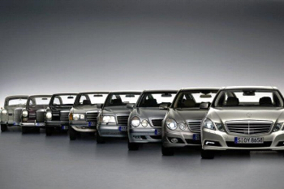

Mercedes

Mercedes-Benz és una divisió multinacional del fabricant alemany Daimler AG, coneguda com una marca automobilística de luxe que fabrica autobusos, camions i cotxes. Mercedes-Benz té la seva seu central a Stuttgart, Baden-Württemberg, Alemanya i és el fabricant d'automòbils més antic del món. Els més propers competidors de Mercedes al mercat actual de cotxes de luxe són: Acura, Alfa Romeo, Audi, BMW, Cadillac, Infiniti, Jaguar, Lexus, Volkswagen i Volvo. La famosa estrella de tres puntes, dissenyada per Gottlieb Daimler, mostra la capacitat dels seus motors per al seu ús en terra, mar i aire